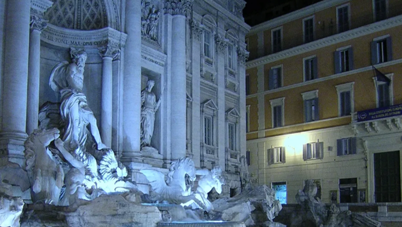

Фонтан Треви - самый известный, самый большой и самый красивый фонтан Рима. В общем, самый - самый из множества фонтанов столицы Италии.
Треви примыкает к фасаду палаццо Поли и создает с ним единую архитектурную композицию. В центре фонтана расположена почти 6 метровая мраморная статуя Нептуна, выезжающего на морской раковине, которую тянут тритоны и морские лошади - гиппокампы. По правую руку Нептуна – богиня изобилия, по левую – аллегорическая фигура, олицетворяющая здоровье и благополучие. Над ней изображен барельеф, на котором Агриппа командует строительством акведука. Статуя справа - Здоровье. Над ней изображен барельеф, на котором молодая девушка указывает солдатам на источник воды.
Гости столицы Италии стекаются к достопримечательности, чтобы полюбоваться захватывающими дух видами. Помимо этого, туристы выполняют обязательный ритуал – поворачиваются к источнику спиной и кидают через плечо монетку. Говорят, что бросив металлическую денежку к ногам богинь можно рассчитывать на их благосклонность.